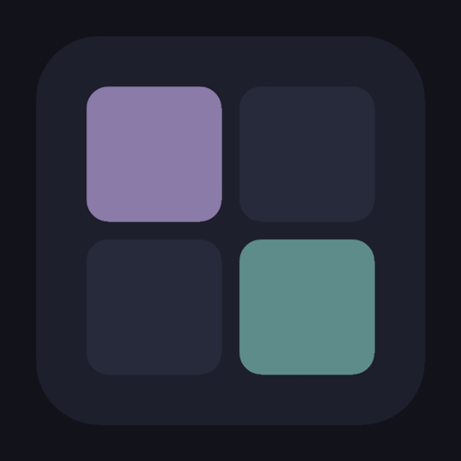

RekiBase
One tracker for every collection you keep, instead of a different app for each one.
What it is
RekiBase is a mobile-first personal collection tracker for Android. Instead of downloading a separate niche app for wine, books, restaurants, or whatever else you like to keep track of, and instead of wrangling a spreadsheet that never quite fits, RekiBase lets you build your own collection with the fields you actually want.
Each collection gets its own custom schema: you pick the name, an emoji icon, a color, and the fields that make sense for what you're tracking, whether that's a rating, a location, a photo, or a link. It's built for people who already have a few of these collections scattered across other apps, sticky notes, or notebooks, and just want one place for all of it.
Features
- Custom Collections: Create unlimited collections with custom names, emoji icons, and color coding.
- Dynamic Schemas: Define the fields for each collection using 10 field types, including text, a text area, number, half-star rating, date, single select, multi select, image, link, and location.
- Quick Data Entry: Optimized so you can capture a new entry in under 30 seconds.
- Check-Ins: Track repeated visits or uses with timestamped snapshots, so a single entry can grow a history over time.
- Cross-Collection Links: Reference entries across collections, with automatic backlink resolution so the connection shows up on both sides.
- Search: Full-text search within a single collection, or across all of them at once (Pro).
- Import/Export: Back up and restore with ZIP files, and import or export as CSV or Markdown.
- Image Capture: Attach photos from your camera or gallery, stored locally on your device's filesystem.
- Location Tagging: Capture GPS coordinates and addresses on entries.
- Three Themes: Obsidian Velvet, Smoke & Stone, and Midnight Atelier, each available in light and dark mode.
Getting started
Install RekiBase from the Google Play Store and you're ready to go. There's no account to create and nothing to sign in to; the app just opens and lets you start building your first collection.
All of your data stays on your device in a local SQLite database, so it's there whether or not you're online. If you want a copy elsewhere, the import/export tools let you back up to a ZIP file or export to CSV or Markdown whenever you like.